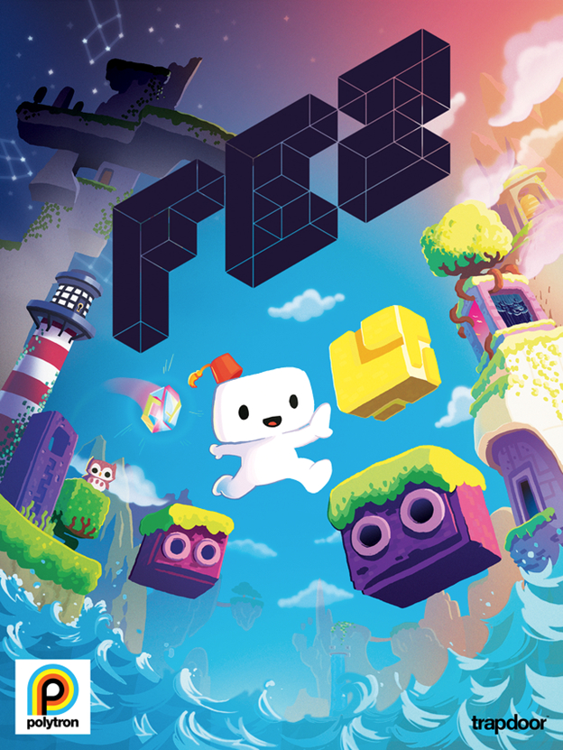

4 La industria del Desarrollo de Videojuegos en Guatemala
4.2 Artículo
La industria internacional del desarrollo de juegos está produciendo miles de millones de dólares al año, y ahora ya no solamente en la venta de juegos físicos, sino también la distribución digital, gracias al internet de alta velocidad, smartphones y tablets que han abierto todo un nuevo mundo de posibilidades para los desarrolladores en todas partes del mundo. Los juegos que han sido algo tan íntimo en el crecimiento y vida de muchas personas durante los últimos 30 años, ya no son desarrollados por empresas multimillonarias con miles de empleados, sino se le han abierto las puertas a los desarrolladores independientes con oportunidad de emerger en este mercado y competir contra empresas grandes y establecidas en la industria.
Guatemala, un país conocido mundialmente por sus productos agrícolas como el café y el azúcar, se ha ido quedando algunas décadas atrás en la revolución tecnológica incluyendo la gigantesca industria de los videojuegos.
La industria que nació con juegos como Pacman y Super Mario Bros ha crecido mucho más de lo que nos imaginamos o se hubiese esperado, llegando a millones de hogares en todo el mundo, ahora no sólo por medio de la televisión.
Ahora podemos observar personas en el bus u oficina jugando en su telefono Candy Crush (creado por King, que reporto ingresos de $1.88 mil millones en el 2013), Clash of Clans (creado por Supercell, que reporto haber generado $892 millones en el 2013) o cualquier juego de moda con acceso a redes sociales inconscientes del esfuerzo que le ha tomado a las empresas llevar a sus productos al estado en que están. Juegos que ahora están valuadas en millones de dólares. Esto es algo impresionante y relevante con nuestro tema, ya que hace 5 o 10 años no muchos habían escuchado nunca el nombre de estas empresas.
Recuerdo haber leído en alguna parte, “el buen diseño es el que nadie nota”, y esto aplica perfectamente a los juegos. Y es de aquí de donde sale la magia del desarrollo de juegos, esa sensación especial que le produce al desarrollador del juego al crear emociones y recuerdos con algo que salió de su imaginación, creatividad y esfuerzo.
Actualmente la industria de los juegos se ha expandido en tantos horizontes, que no solo ha permitido la evolución en el área técnica, permitiéndonos crear juegos altamente realistas, sino también ha ido evolucionando en la forma en la que interactuamos con ellos, en la forma en que los compartimos y la forma en la que usualmente nos entregan sus mensajes. A esto se le llama “narrativa” en un juego, es esa parte del diseño del mismo que nos permite conectarnos a un nivel personal con el juego, haciendo sentir como si uno estuviera tomando parte de una película o libro interactivo, siendo un medio artístico, de comunicación y entretenimiento, brillan, otorgándonos un nivel de inmersión e interacción más allá de lo que cualquier programa de TV, película o libro nos ha permitido. Nos deja formar parte de estos mundos fantasiosos, a veces más cercanos a la realidad de lo que uno piensa, o bien muchas veces con historias en planetas lejanos, ficticios, de los cuales uno solo podría formar parte dentro de un videojuego.

En los últimos años, dado a la accesibilidad que han tenido las herramientas para el desarrollo de juegos, han surgido una infinidad de personas y equipos de pequeño tamaño que siguiendo a veces sus llamados artísticos y otras veces siguiendo lo que pareciera ser una gran oportunidad de negocios, han creado experiencias únicas. Desde juegos donde se crea un universo infinito de planetas con una cantidad ilimitada de variantes, incluyendo animales y vegetación, como es el caso del juego No Man’s Sky; hasta juegos donde no hay un propósito definido, más que la exploración de uno mismo mientras se juega, como Proteus o Journey.
Esta explosión de juegos que ha pasado durante los últimos años, ha hecho surgir una nueva cultura en el desarrollo de juegos, una cultura mundial, llena de personas tan diferentes que uno pensaría que no podrían trabajar juntos. Una cultura de personas que vienen de experiencias previas tan diferentes, como literatura inglesa, música, pintura y un sin fin más de carreras e industrias que estaban completamente desconectadas de los juegos hace varios años.
Todas estas líneas de trabajo son un reflejo de lo complejo que es hacer un juego, y de las diferentes habilidades que se necesitan. Usualmente siempre se tiene un compositor de audio, un compositor de música, alguien que escribe la narrativa del juego así como tambien los elementos creados alrededor de ella. Tambien el arte visual refleja mucho del mensaje que desea transmitir cada juego. Todas estos aspectos, son lo que forman un juego en donde el jugador se pierde en un mundo digital de emociones.
Como consecuencia de esto, cada año se han ido abriendo más espacios, más conferencias, más lugares donde todas estas personas pueden mostrar su trabajo, expresar libremente lo que es su oficio, compartir experiencia e historias sobre cómo han llegado a donde están.
Conferencias y festivales como la Game Developer Conference, Pax Prime, Gamescom y otras más han permitido a los desarrolladores conectarse tanto con los jugadores de sus mismos juegos, como también con desarrolladores a lo largo del mundo, esto, mas la habilidad de comunicación que nos han permitido las varias redes sociales que ahora existen, han amplificado en grandes cantidades el sentido de comunidad global que antes era más escaso en la industria.
Figura 4.1: Logo de la conferencia de Desarrolladores de Juegos (Game Developers Conference) Imagen obtenida de: http://commons.wikimedia.org/wiki/File:Game_Developers_Conference_logo.svg
{kind=link}
Los tiempos definitivamente han cambiado, y ahora los juegos no solo se han establecido como una de las industrias de entretenimiento más grandes del mundo, sino forman parte ahora de un área de estudio, algo que se comparte con la academia en varias universidades de prestigio mundial. Inclusive varios gobiernos han dado soporte económico a proyectos de desarrollo en el área, validando así la importancia que tiene en la realidad actual. Entre estos casos tenemos a la Agencia de Cultura Federal de Canada, la proporciono en el 2009 el dinero necesario para poder desarrollar Fez, un juego en 2D basado en un mundo 3D o tambien el Gobierno de Australia el cual realizó una inversión de $2.6 millones a 21 estudios de juegos diferentes, con la esperanza de poder empezar a tener un dominio mas amplio sobre el mercado mundial.
Y se preguntaran, ¿Qué tiene que ver todo esto con la industria de juegos en Guatemala? Pues el panorama mundial nos da un muy buen punto de vista de cómo funcionan las cosas ahora, de lo cual debemos seguir el ejemplo.
El país tiene un gran potencial, lo que falta es encontrar la manera de crear las condiciones necesarias para que este potencial se convierta en algo que podría cambiar la manera en la que hasta ahora, se ha ido manejando la percepción que se tiene hacia los juegos en Guatemala. Contamos con el talento necesario en muchas de las áreas que se necesitan para realizar video juegos, el costo de vida en el pais es mucho menor que en la mayoria de países donde se realizan los video juegos y la conversión de moneda ayuda considerablemente en los ingresos que se perciben en dólares. Necesitamos apoyo gubernamental, que se den cuenta que no solo se le puede apoyar como una manera de expresión artística como lo son el canto, o la pintura; sino también como una fuente de ingresos para el país que podría ser muy significativa si la comunidad local llegara a crecer.
Seria ideal una inversión significativa de fondos dedicados a poder crecer y estabilizar la industria, y colocarla como una fuente importante de empleo y de ingresos en el país.
Claro esto no esta limitado solamente al sector público, de igual manera se podrian conseguir fondos privados provenientes de individuos o entidades que se dedican a hacer ese tipo de inversiones.
El apoyo académico también es muy importante, se necesita de carreras que fomenten el estudio y la exploración de este tipo de campos, necesitamos becas para ir a especializarse en estos temas y permitir a los estudiantes universitarios poder usar este tipo de proyectos como tesis y trabajos de graduación, de manera que se vaya creando un registro sobre esta disciplina dentro del país.
La Universidad San Carlos, gracias a la conexión que tiene con el sector público y la gran cantidad de estudiantes que tiene en cada rama, podría crear un grupo y espacio donde estas mismas puedan conectar entre ellas, e implementar en los planes de estudio que se creen cursos donde se pueda cubrir un poco más a fondo las habilidades necesarias.
Y la comunidad, el último de los tres pilares que se necesita en orden para proveer un ambiente donde se puedan producir juegos de calidad mundial y al mismo tiempo incentivar al trabajo no solo como individuos, sino también como un colectivo, que si bien son competencia de alguna manera, lo que quieren en conjunto es lograr mover hacia delante la industria local. Muy importante, porque es quien haría esfuerzos iniciales para que los otros 2 pilares realmente se involucren.
4.3 Conclusiones
- Hay una gran oportunidad de ingresos dentro de la industria de los videojuegos. En un mercado con valor de $93 mil millones de dólares, cubriendo esta cifra videojuegos de consolas, computadoras y dispositivos móviles.
- Se deben crear espacios y eventos donde se pueda socializar entre las partes activas de la industria. Apoyo entre los mismos profesionales en el ambito y también para los nuevos en el medio, crear cursos, talleres y otras actividades para iniciarlos en estas áreas.
- La industria tiene que llegar a un punto donde hacer juegos sean rentable y pueda generar empleos y oportunidades de negocios a nivel nacional e internacional.